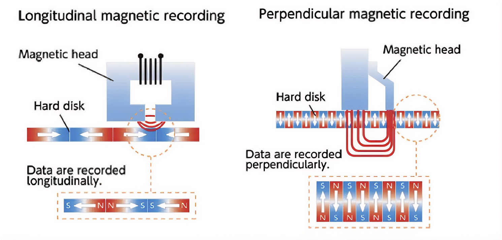
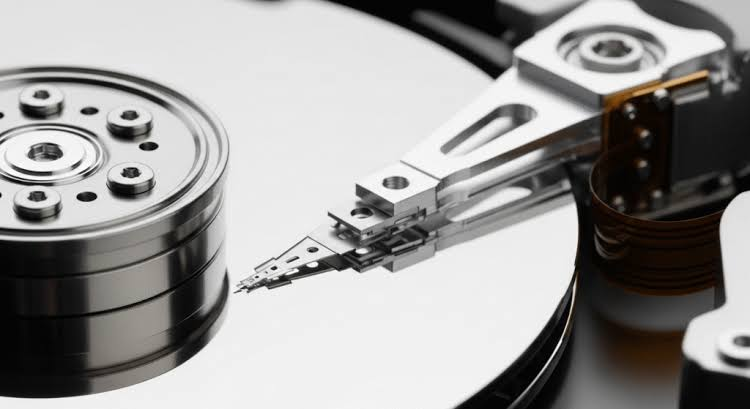
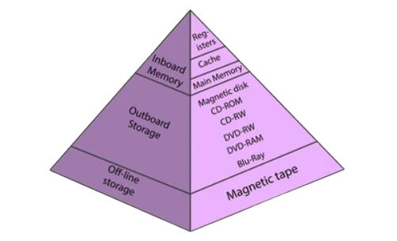

Introduction
Before the solid-state drive, before the USB flash drive, and long before the cloud, data lived on spinning disks. From IBM's refrigerator-sized RAMAC 350 in 1956 — which stored a mere 5 megabytes across fifty 24-inch platters — to the 20-terabyte drives sold today, the hard disk drive (HDD) defined the landscape of secondary storage for more than six decades.
This section traces that evolution: how magnetic recording principles were harnessed to encode binary data, how the mechanical architecture of platters, read/write heads, and actuator arms was refined across generations, and how the HDD's unique random-access capability reshaped the memory hierarchy of every computer system built between the 1950s and the 2010s.
Magnetic Storage Principle
Magnetic storage is a long-term and non-volatile way of storing analog, digital, and alphanumeric data. Magnetic storage technology fundamentally operates by defining different magnetization states of a magnetic medium to represent binary data, specifically '1' and '0'. The storage of information is achieved by actively changing the magnetization state of this magnetic medium (Sun, 2024). In most applications, an electric current is employed to generate a changing magnetic field across a specially prepared tape or disk that imprints the tape or disk with patterns that, when "read" by an electromagnetic drive "head," mimics the wavelengths of the original signal (Meyers, 2021).
Writing Data
During the write process, a write current Iw flows through the write coil, generating magnetic flux in the soft magnetic yoke that concentrates in the main pole, creating a high magnetic field (1.2–2T) in a small area adjacent to the recording medium. This perpendicular magnetic field creates magnetization transitions in the hard recording layer when it exceeds the medium coercivity Hc, forming a write bubble where the field is sufficient for recording. As the head flies over the medium, the write bubble has leading and trailing edges, and when the write current changes polarity, the field reverses instantaneously, forming sharp magnetization transitions on the trailing edge (Heidmann & Taratorin, 2011).
Reading Data
The read process uses a sensitive multilayer element (TMR or GMR sensor) placed between soft magnetic shields that detects the magnetic fields from previously recorded transitions. During reading operations, the sensor is exposed to local magnetic fields from the recorded data, and changes in sensor resistance are transformed into playback voltage by read channel electronics, enabling data detection and recovery (Heidmann & Taratorin, 2011).
Perpendicular Magnetic Recording (PMR)
For most of the HDD's history, bits were recorded longitudinally — the magnetic domains lay flat along the surface, end to end. The main feature of Perpendicular Magnetic Recording (PMR) is that the magnetic induction direction is perpendicular to the direction of magnetic head movement, rather than longitudinally (parallel to the surface) as in older technologies. This vertical orientation allows for a higher density of data storage because the magnetic domains can be packed more closely together without interfering with each other as much as horizontally oriented domains would (Sun, 2024).

Key Components of an HDD

Platters
The platter is the primary storage component of a hard disk drive (HDD). It is a circular disk typically made of aluminum, glass, or ceramic, with glass commonly used in smaller drives because of its smoother surface. The platter is coated with several thin magnetic and protective layers that enable data to be stored magnetically while improving durability. Data is organized into tracks (concentric circles), sectors (subdivisions of tracks), magnetic domains (which represent binary data), and cylinders (aligned tracks across multiple platters) (Tuteja, 2026).
Because the platter stores data magnetically, it is highly sensitive to contamination and physical damage. Even a tiny particle of dust can scratch its surface during operation, potentially causing data loss or drive failure. For this reason, HDDs are assembled and opened only in specialized cleanroom environments. Dampers or separators are also placed between platters to reduce air turbulence and noise, while the head stack assembly, which carries the read/write heads, is even more delicate than the platters themselves.
Read/Write Heads
Read/write heads are tiny electromagnetic components located at the head of a hard disk drive's mechanical swivel arm. When the magnetic disks rotate, they are floating at the nanoscale above the ferromagnetic data layer on a tiny air cushion. Mechanical hard drives have rotation speeds ranging from 5,400 to 15,000 rpm (revolutions per minute) (Evers, n.d.).
These heads are responsible for writing data to and reading data from the HDD platters. During the writing process, they generate a magnetic field that changes the orientation of magnetic regions on the platter, allowing data to be stored through remanent magnetization. During the reading process, the heads detect these magnetic orientations as induced electrical signals, which are interpreted as stored data. The number of read/write heads depends on the number of writable magnetic surfaces in the drive (Evers, n.d.).
Actuator Arm
The actuator arm (frequently referred to as the E-block) serves as the primary physical chassis within a hard disk drive (HDD) that mechanically bridges the controller's magnetic drive commands with the data surfaces of the disk platters (Trawiński, 2018). Driven by an electromagnetic Voice Coil Motor (VCM), this rigid aluminum component swings radially across the spinning platters to position the attached hardware precisely over microscale data tracks (Horsley et al., 1998; Sankar et al., 2008). Because every read/write head is mounted onto this single, unified arm assembly, all of the heads physically move in perfect unison across the media surfaces. Consequently, while only one specific head activates to read or write data at any given microsecond, the entire array of heads simultaneously hovers over the exact same vertical cylinder of data across the various stacked platter layers (Sankar et al., 2008).
Table of HDD Internal Components
| Component | Function | Key metric (modern drive) |
|---|---|---|
| Platters | Magnetic storage surface | 2–8 per drive |
| Spindle motor | Rotates platters at constant speed | 5,400 – 15,000 RPM |
| Read/Write heads | Encode and detect magnetic fields | ~3–5 nm flying height |
| Actuator arm | Positions heads over correct track | 8–12 ms average seek time |
| Voice-coil actuator | Drives precise arm movement | < 1 ms track-to-track |
| Cache buffer (DRAM) | Buffers incoming/outgoing data | 32–256 MB on-board |
Random Access vs. Sequential Access
One of the HDD's defining advantages over its predecessor, magnetic tape, was its ability to access data in any order without rewinding through intervening content. This capability is called random access, and it transformed how operating systems and databases could be designed.
Sequential Access
Sequential access is a method of reading or writing data in a fixed, linear order, processing information one piece at a time from the beginning toward the end (GeeksforGeeks, 2025). Although it can be slower when accessing specific data, it is efficient for workloads where data is processed in a predictable sequence. This method also benefits from spatial locality, allowing nearby data to be accessed efficiently and enabling techniques such as prefetching, where data is loaded into faster memory before it is needed (Mishra, 2025).
Random Access
Random access allows data to be read or written directly from any location in memory or storage without following a sequential order (GeeksforGeeks, 2025). This enables fast retrieval of specific data regardless of its physical location, making it well suited for storage devices such as hard disk drives (HDDs) and solid-state drives (SSDs). However, because data requests may be scattered across different locations, random access can result in more cache misses and higher latency than sequential access (Mishra, 2024).
Reading from or writing to an HDD begins with a seek, where the actuator arm moves the read/write head to the correct track (typically 2–10 ms). The drive then waits for the target sector to rotate beneath the head, known as rotational latency (about 4 ms at 7,500 RPM), before transferring data at around 100–150 MB/s. The combined seek time and rotational latency is called disk latency, which is typically 5–10 ms (Stanford University, n.d.).
Storage Capacity Scaling and Areal Density
Areal density measures how many bits can be stored per unit area of disk surface, typically expressed in gigabits per square inch (Gb/in²) or megabits per square inch (Mb/in²). It is the fundamental driver of HDD capacity growth — the same physical disk form factor stores more data with each generation simply by packing bits closer together (Thompson & Best, 2000).
From 1956 to the early 2000s, areal density roughly doubled every 12 to 18 months — a pace that tracked closely with, and occasionally exceeded, Moore's Law in semiconductors (Quick & Choo, 2014; Thompson & Best, 2000). This compounding improvement of approximately 60–100% per year was the engine behind HDD capacity growing from under 5 MB in 1956 to multiple terabytes by the 2010s (Goda & Kitsuregawa, 2012; Haug & Drazen, 2023).
Figure Caption. Areal density figures are approximate, compiled from industry data. The logarithmic nature of this growth means even the smallest early incremental steps represent monumental engineering achievements.
Technologies That Enabled Growth
Several engineering breakthroughs drove successive waves of areal density improvement: the introduction of thin-film inductive heads in the 1980s; the adoption of magnetoresistive (MR) read heads in the 1990s; giant magnetoresistance (GMR) heads in the late 1990s, recognized with the 2007 Nobel Prize in Physics; and perpendicular magnetic recording (PMR) in 2005. More recent techniques include shingled magnetic recording (SMR) and heat-assisted magnetic recording (HAMR), still in commercial deployment today (Western Digital, 2022).
HDD Role in Memory Hierarchy
The Principle of the Memory Hierarchy
The fundamental organization of computer storage into a pyramid of varying speeds, costs, and capacities is dictated by the principle of locality of reference (temporal and spatial locality).

Faster storage is more expensive per byte and therefore smaller; slower storage is cheaper and therefore larger. The HDD occupied the secondary storage tier of this hierarchy for decades; below RAM in speed and cost, but above magnetic tape in both (Hennessy & Patterson, 2017).
Because the HDD is orders of magnitude slower than DRAM but orders of magnitude cheaper per byte, operating systems use it for virtual memory — swapping pages of RAM content to disk when physical memory is full (Tanenbaum & Bos, 2014). File systems, databases, and application data all reside permanently on the HDD, loaded into RAM only when needed. This two-tier arrangement of DRAM + HDD was the dominant computing model from the 1970s until SSDs became cost-competitive in the early 2010s (Tanenbaum & Bos, 2014).
Interactive: HDD Read/Write Simulator
Use the simulator below to observe how a hard disk drive seeks, writes, and reads data. Enter a short string, choose an operation, and watch the actuator arm position the read/write head over the correct track while the platter spins.
ACCESS LATENCY COMPARISON
References
- Evers, S. (n.d.). Read/Write heads. Attingo Data Rescue. https://www.attingo.com/keywords/read-write-heads/
- GeeksforGeeks. (2025). Difference between sequential and random memory access. GeeksforGeeks. https://www.geeksforgeeks.org/computer-organization-architecture/difference-between-sequential-and-random-memory-access/
- Goda, K., & Kitsuregawa, M. (2012). The history of storage systems. Proceedings of the IEEE, 100(Special Centennial Issue), 1433–1440. https://doi.org/10.1109/jproc.2012.2189787
- Haug, C. J., & Drazen, J. M. (2023). Artificial intelligence and machine learning in clinical medicine, 2023. New England Journal of Medicine, 388(13), 1201–1208. https://doi.org/10.1056/nejmra2302038
- Heidmann, J., & Taratorin, A. M. (2011). Magnetic Recording Heads (Vol. 19, pp. 1–105). Elsevier. https://doi.org/10.1016/B978-0-444-53780-5.00001-6
- Hennessy, J. L., & Patterson, D. A. (2017). Computer architecture: A quantitative approach (6th ed.). Morgan Kaufmann.
- Horsley, D. A., Horowitz, R., & Pisano, A. P. (1998). Microfabricated electrostatic actuators for hard disk drives. IEEE/ASME Transactions on Mechatronics, 3(3), 175–183. https://doi.org/10.1109/3516.712113
- Meyers, J. M. (2021). Magnetic Storage | Computer Science | Research Starters. EBSCO. https://www.ebsco.com/research-starters/computer-science/magnetic-storage
- Mishra, M. (2024). The Dual Nature of Data Access: Sequential vs. Random in Database Systems. Medium. https://mohitmishra786687.medium.com/the-dual-nature-of-data-access-sequential-vs-random-in-database-systems-eac3f26a395e
- Quick, D., & Choo, K. K. (2014). Data reduction and data mining framework for digital forensic evidence: Storage, intelligence, review and archive. Trends and Issues in Crime and Criminal Justice, (480). https://doi.org/10.52922/ti180697
- Sankar, S., Gurumurthi, S., & Stan, M. R. (2008). Intra-disk Parallelism. ACM SIGARCH Computer Architecture News, 36(3), 303–314. https://doi.org/10.1145/1394608.1382147
- Stanford University. (n.d.). Magnetic Disks (Hard Drives). Stanford University. https://web.stanford.edu/~ouster/cs111-spring21/lectures/disks/
- Sun, J. Z. (2024). Development And Application of Magnetic Storage Technology. Highlights in Science Engineering and Technology, 111, 167–173. https://doi.org/10.54097/mpny0v89
- Tanenbaum, A. S., & Bos, H. (2014). Modern operating systems (4th ed.). Pearson.
- Thompson, D. A., & Best, J. S. (2000). The future of magnetic data storage technology. IBM Journal of Research and Development, 44(3), 311–322. https://doi.org/10.1147/rd.443.0311
- Trawiński, T. (2018). Mathematical model of multiactuator for HDD head positioning system. AIP Conference Proceedings, 2026(1), 020075. https://doi.org/10.1063/1.5066537
- Tuteja, U. (2026). Inside a hard drive: head, platter, PCB, and spindle motor. Stellar Data Recovery India. https://www.stellarinfo.co.in/hdd/key-components-of-hard-drive.php